| 日期 | 路线 | 景点 | 备注 |
|---|---|---|---|
| 第一天 | 太原 → 昆明 | 休息调整 | -- |
| 第二天 | 昆明 → 大理 |
【大石林】 【小石林】 【步哨山】 【李子园箐】 【万年灵芝】 【乃古石林】 |
门票：130 元 / 人 电瓶车：25 元 / 人 |
| 第三天 | 大理 → 大理 |
【环洱海】 【大理古城】 【崇圣寺三塔】 【喜洲古镇】 【海舌公园】 【蝴蝶谷】 【花语牧场】 【双廊古镇】 【南诏风情岛】 【挖色镇】 【小普陀岛】 【圣托里尼】 【金梭岛】 【洱海公园】 |
崇圣寺三塔：70 元 / 人 大理三塔电瓶车：35 元 / 人 大理古城电瓶车：35 元 / 人 洱海游船：140 元 / 人（含白族三道茶歌舞表演） 花语牧场：30 元 / 人 |
| 第四天 | 大理 → 丽江 |
【感通索道】 【寂照庵】 【感通寺】 【清碧溪】 【玲珑棋盘】 【苍山大峡谷】 【丽江古城】 【拉市海】 |
感通索道：120 元 / 人（含苍山门票和索道） 丽江古城：50 元 / 人（维护费） |
| 第五天 | 丽江 → 丽江 |
【玉龙雪山】 【冰川大索道】 【蓝月谷｜白水河】 【甘梅子】 【丽水金沙】 【印象丽江】 【千古情演出】 【束河古镇】 |
套票：300 ～ 350 元 / 人 进山费：100 元 / 人 云杉坪索道：75 元 / 人（三选一） 牦牛坪索道：80 元 / 人（三选一） 冰川大索道：120 元 / 人（三选一） 冰川大巴车：20 元 / 人（往返大索道入口） 羽绒服出租：50 元 / 件 氧气瓶：30 元 / 瓶 景区电瓶车：50 元 / 人（蓝月谷） 丽水金沙：280 元 / 人 印象丽江：240 元 / 人 千古情演出：260 元 / 人 玻璃栈道：100 元 / 人（东巴秘境） 景区电瓶车：60 元 / 人（东巴秘境） 束河古镇门票：50 元 / 人 |
| 第六天 | 丽江 → 泸沽湖 |
【泸沽湖景观台】 【大落水村】 【里格半岛】 【情人滩】 【篝火晚会】 【猪槽船】 【草海】 【走婚桥】 【格姆女神山】 【摩梭村落】 |
泸沽湖门票：100 元 / 人 篝火晚会：30 元 / 人 猪槽船：30 - 200 元 / 人（视距离远近） 摩梭家访：20 元 / 人 王妃故居：10 元 / 人 亲爱的客栈：100 元 / 人 摩梭博物馆：28 元 / 人 里务比岛：50 元 / 人 走婚桥 和 里格半岛不收钱 |
| 第七天 | 丽江 → 北京 | 回家睡觉 | -- |
| 用途 | 费用 | 数量 | 总计 |
|---|---|---|---|
| 用车 | 800 元 / 天 | 6 天 | 4800 元 |
| 住宿 | 240 元 / 间 / 天 | 3 间 * 6 天 | 4320 元 |
| 门票 | 1000 元 / 人 | 6 人 | 6000 元 |
| 总计： 15120 元 | 人均： 2520 元 | ||
| 用途 | 费用 | 数量 | 总计 |
|---|---|---|---|
| 用车 | 800 元 / 天 | 6 天 | 4800 元 |
| 动车【昆明 → 大理】 | 145 元 / 人 | 6 人 | 870 元 |
| 住宿 | 260 元 / 间 | 3 间 * 6 晚 | 4680 元 |
| 景点 |
【石林】：130 元 / 人 【大游船】：140 元 / 人 【吉普车】：40 元 / 人 【感通索道】：120 元 / 人 【进山费】：100 元 / 人 【冰川大索】：140 元 / 人 【束河】：30 元 / 人 【泸沽湖】：100 元 / 人 |
6 人 | 800 元 * 6 人 = 4800 元 |
| 旅游意外险 | 50 元 / 人 | 6 人 | 300 元 |
| 服务费 | 100 元 / 人 | 6 人 | 600 元 |
| 总计： 16050 元 | 人均： 2675 元 | ||
| 机票 | 1500 元 / 人 | 6 人 | 9000 元 |
| 吃饭 | 100 元 / 人 / 天 | 6 人 * 7 天 | 4200 元 |
| 其他消费 | 500 元 / 天 | 6 天 | 3000 元 |
| 总计： 32250 元 | 人均： 5375 元 | ||
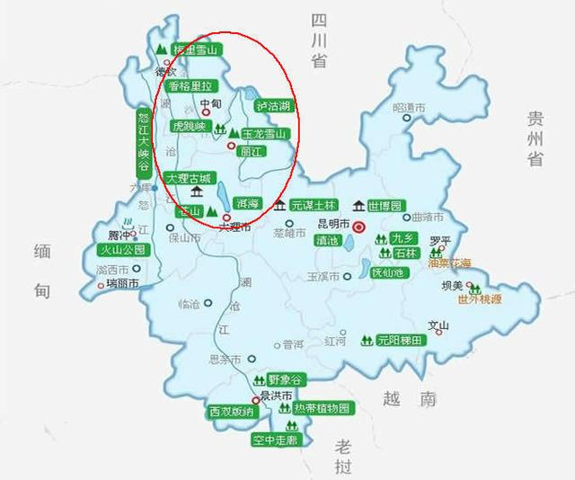
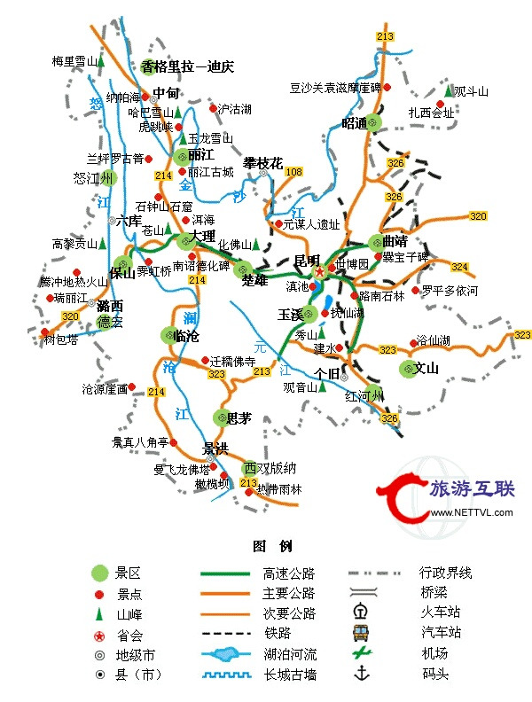
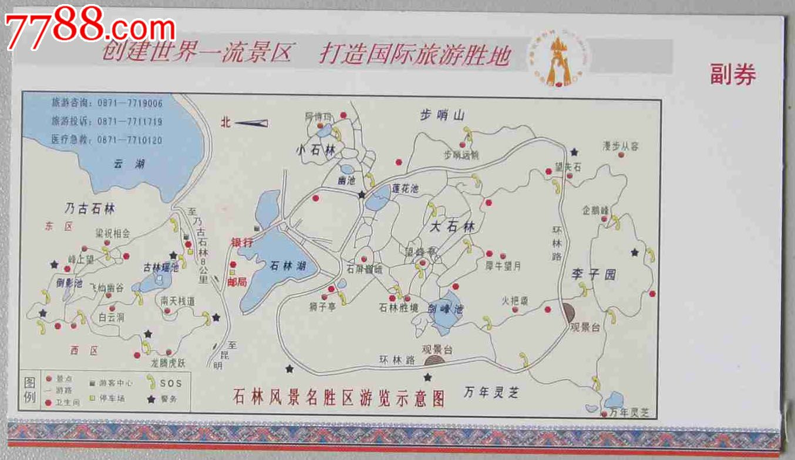
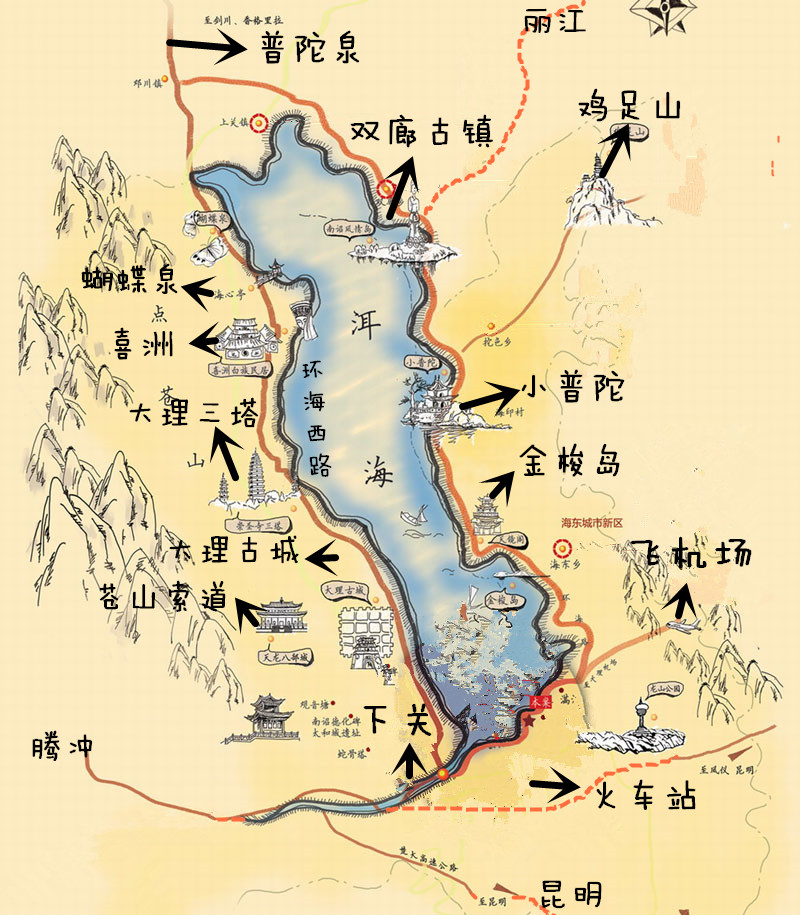
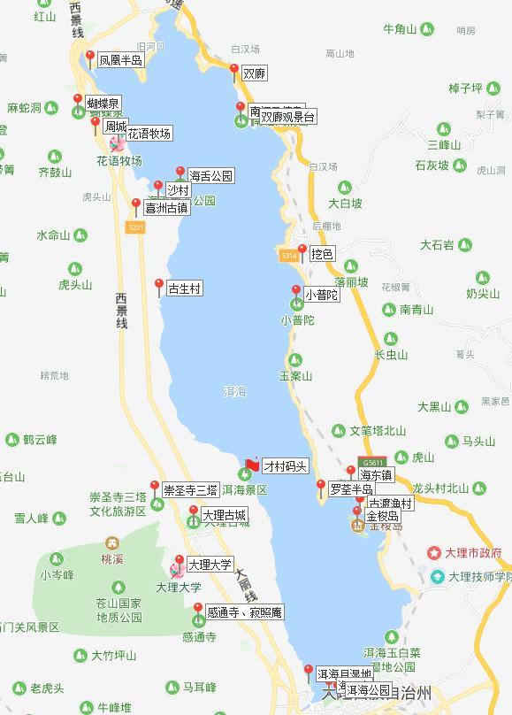
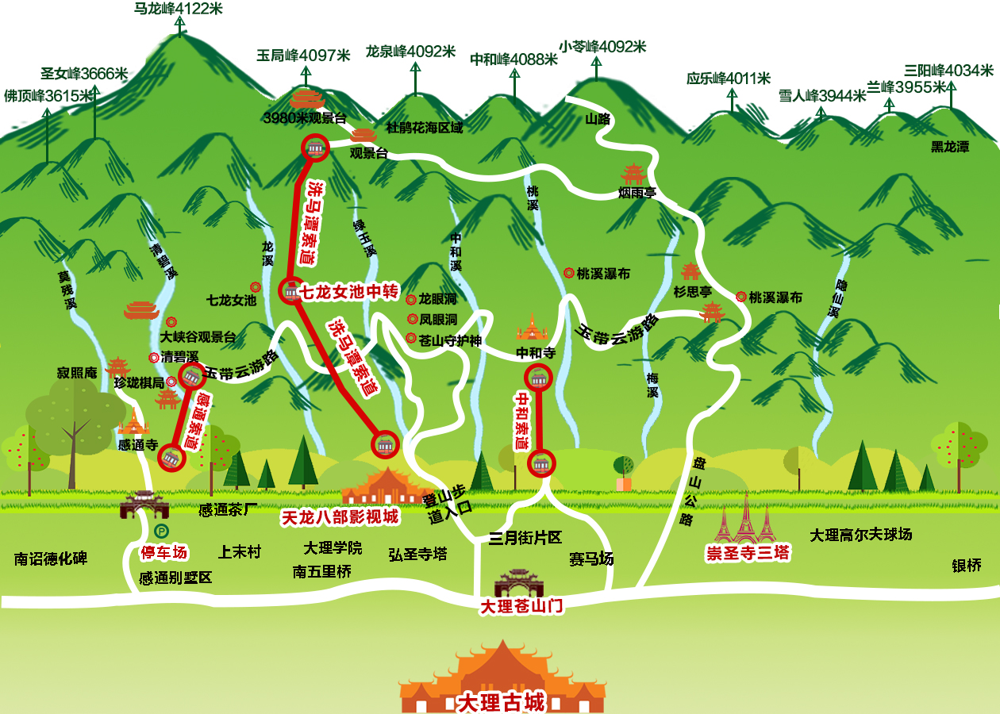
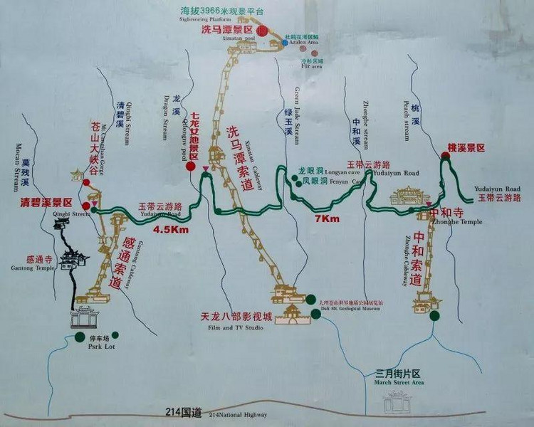
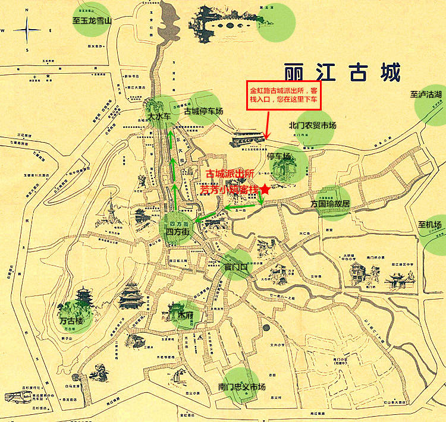
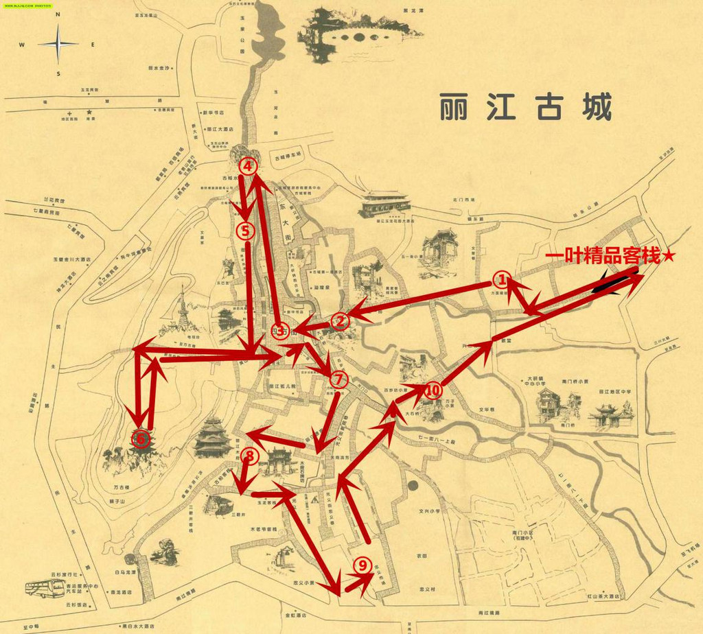
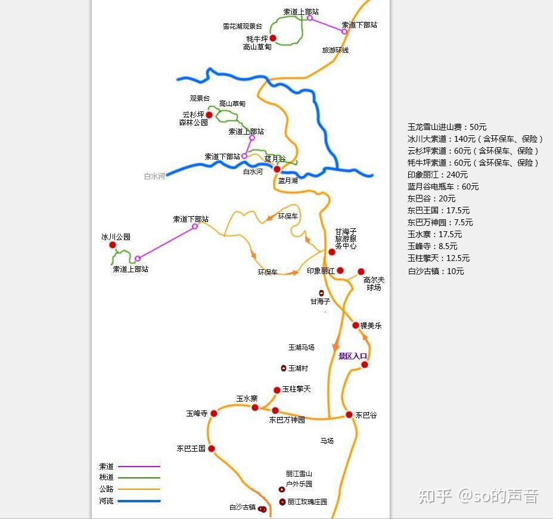
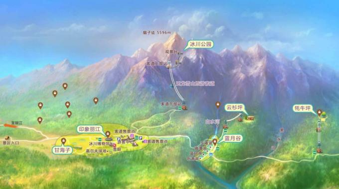
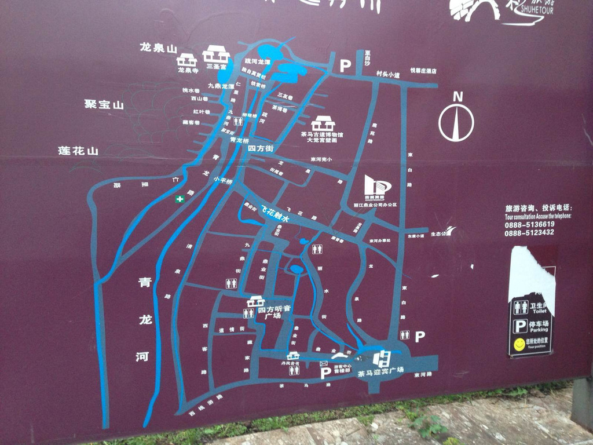
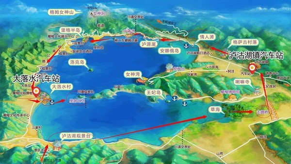
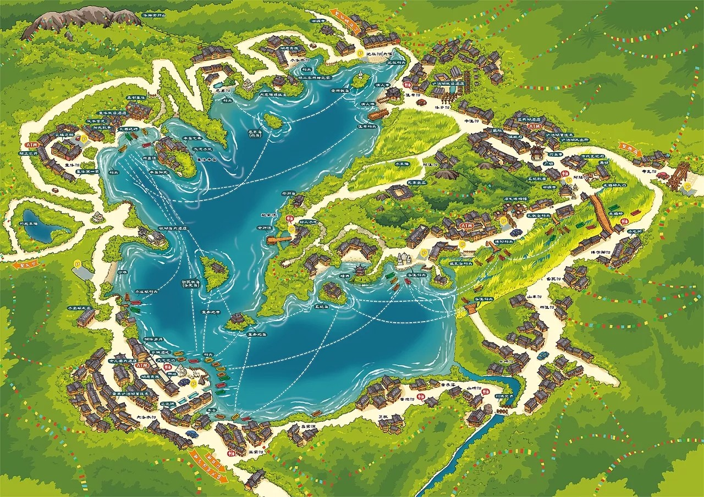
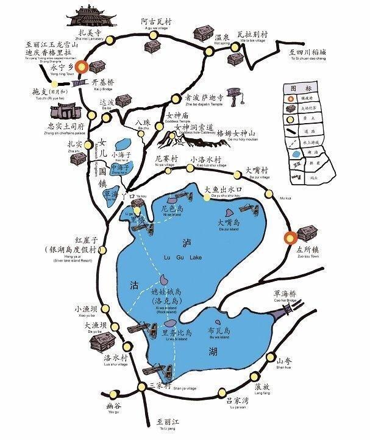